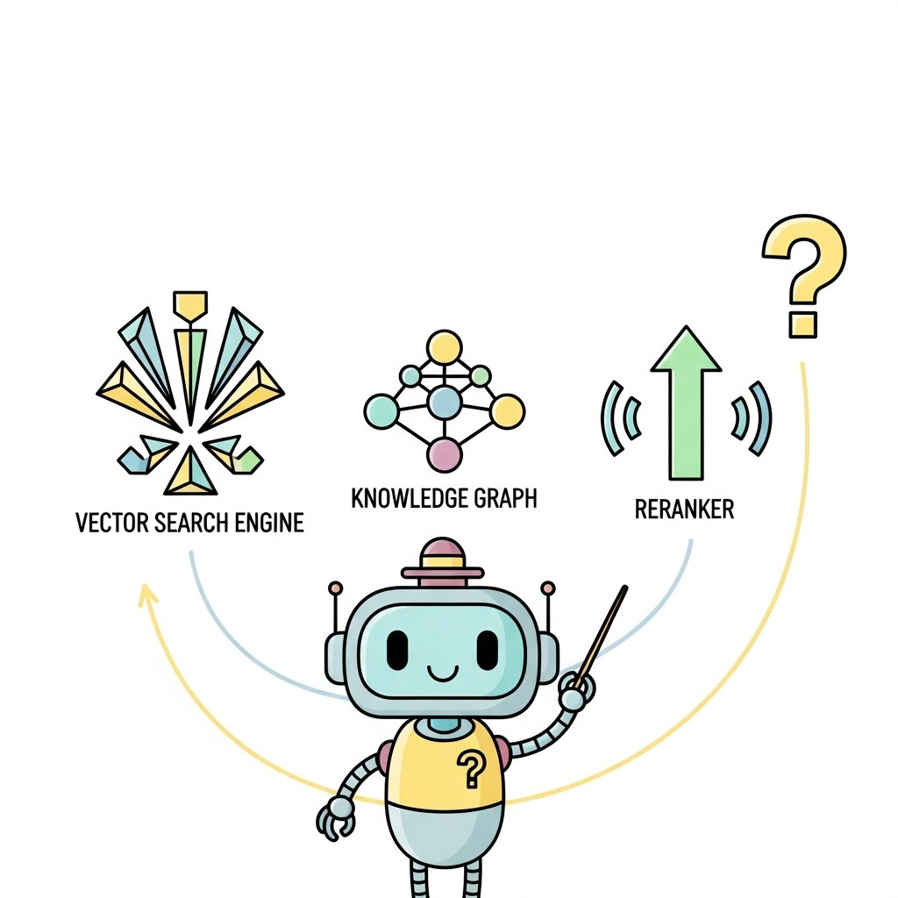

"Naive RAG is a great demo and a bad product."
RAG, Production-Tested AI Agent
Chapter 32 covered RAG basics; this chapter levels up: graph-based RAG, agentic retrieval, late-interaction models like ColBERT, hybrid retrieval, knowledge-graph grounding, and the LightRAG/GraphRAG family of 2025-era systems.
Beyond RAG fundamentals, production retrieval systems integrate with knowledge graphs (both for storage and for query reasoning), use orchestration frameworks like LangChain and LlamaIndex, and depend on robust ingestion pipelines that handle the messy real world of PDFs, scraped sites, and database connectors. This chapter covers the advanced techniques.
Chapter Overview
Naive RAG fails when queries and documents use different words, when top-k retrieval misses the best result, or when the model generates claims that the context does not support. This chapter teaches the advanced RAG techniques that fix these failures: hybrid and reranked retrieval, RAG with knowledge graphs (triples, RDF vs property graphs, Cypher), Microsoft's GraphRAG community-summarization variant (plus LazyGraphRAG and DRIFT), the ingestion pipelines that bound retrieval quality, and the RAG frameworks (LangChain, LlamaIndex, Haystack, DSPy) that compress weeks of plumbing into hours of configuration.
Retrieval is half the work of building an LLM product. This chapter is the practical syllabus for moving past naive RAG into systems that hold up at scale.
- Apply hybrid retrieval (BM25 + dense) with cross-encoder reranking for production quality.
- Architect a knowledge-graph RAG system with triple extraction, graph embeddings, and Cypher queries.
- Implement Microsoft's GraphRAG with community detection and local-vs-global query routing.
- Design a RAG ingestion pipeline with parsers, chunkers, deduplication, and quality gates.
- Compare LangChain, LlamaIndex, Haystack, and DSPy as orchestration frameworks for a production RAG stack.
Sections in This Chapter
Prerequisites
- RAG fundamentals from Chapter 32
- Agent foundations from Chapter 26
- Embeddings and ANN basics from Chapter 31
- 35.1a Hybrid Retrieval & Re-Ranking Dense+sparse hybrid search, Reciprocal Rank Fusion, and cross-encoder re-rankers (bge-reranker, mxbai-rerank, Cohere Rerank). Advanced
- 35.1b Query Transformation, HyDE & Multi-step Retrieval Query rewriting, HyDE, contextual retrieval, self-corrective RAG (CRAG, Self-RAG), fusion and multi-modal retrieval, and a tradeoff table. Advanced
- 35.2 RAG with Knowledge Graphs The KG retrieval substrate: triples, RDF vs property graphs, LLM triple extraction, graph embeddings, Cypher path queries, and hybrid KG + vector retrieval. (The community-summarization variant lives in 35.3.) Advanced
- 35.3 GraphRAG: Community-Summarization Retrieval The specific Microsoft GraphRAG technique: community detection, community summaries, local/global query routing, LazyGraphRAG, DRIFT, evaluation. Builds on Section 35.2's KG substrate. Intermediate
- 35.4 RAG Ingestion Pipelines and Connectors Retrieval quality is bounded by ingestion quality. Advanced
- 35.5a RAG Frameworks: LangChain, LlamaIndex & Haystack Why use a RAG framework, deep dives into LangChain, LlamaIndex, and Haystack, a side-by-side comparison, and when to use a framework vs. building from scratch. Advanced
- 35.5b RAG Production: DSPy, Hardening & Security Production hardening for RAG, compound AI systems with DSPy, and retrieval-layer security (RAG poisoning, indirect prompt injection). Advanced
Take the Q&A bot from Lab 32 and rebuild the retrieval layer with Microsoft GraphRAG (community detection over a knowledge graph), then wrap the whole pipeline in DSPy and compile it. By the end you will see global-question performance jump and have a pipeline whose prompts were optimized by the framework, not you.
- Step 1: Build the graph. Use
graphrag(Microsoft) on your Lab 32 corpus: rungraphrag indexto extract entities, relations, and detect communities at multiple resolutions. Persist to parquet. - Step 2: Test local vs. global queries. Ask 10 narrow questions ("what does
BackgroundTasksdo?") and 10 global questions ("what are the main themes of FastAPI's design?"). Local works on naive RAG, global usually doesn't. - Step 3: Run GraphRAG queries. Use
graphrag query --method localand--method global. Compare answers to your Lab 32 baseline. Expect global queries to improve dramatically; local queries comparable. - Step 4: Wrap in DSPy. Define a
dspy.Modulewithretrieve -> generatesignatures. Configuredspy.OpenAI("gpt-4o-mini")as the LM. - Step 5: Compile with MIPROv2. Use 20 of your Lab 32 question-answer pairs as the training set. Run
MIPROv2.compile()to optimize prompts. Inspect the optimized prompts; they will be longer and more specific than what you wrote. - Step 6: Final eval. Re-run Ragas on the same 20 questions: (a) Lab 32 baseline, (b) GraphRAG, (c) DSPy-compiled. Report which dimensions each wins on (faithfulness, relevance, context precision).
Expected time: 4 to 5 hours (chains from Lab 32). Difficulty: advanced. Artifact: 3-way Ragas comparison + a compiled DSPy pipeline.
What's Next?
Next: Chapter 36: Retrieval Tools of the Trade. Chapter 36 closes Part VII with the consolidated retrieval toolbox: vector DBs (FAISS, Pinecone, Qdrant, Weaviate, Chroma, pgvector), sparse retrievers (BM25, SPLADE), reranker models (Cohere, Voyage, ColBERT), graph stores, ingestion frameworks, and the eval rigs (RAGAS, TruLens) that measure faithfulness. Then Part VIII shifts focus from "retrieve a chunk" to "hold a coherent conversation across many turns".